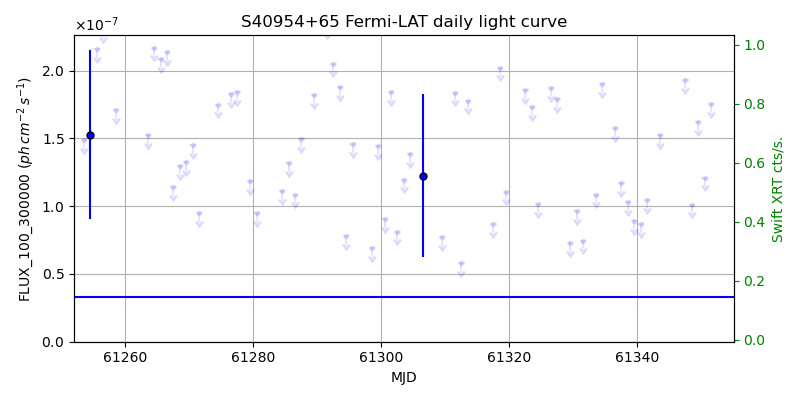
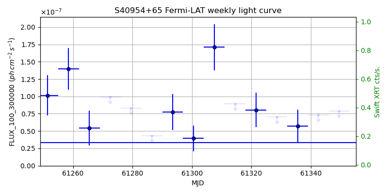
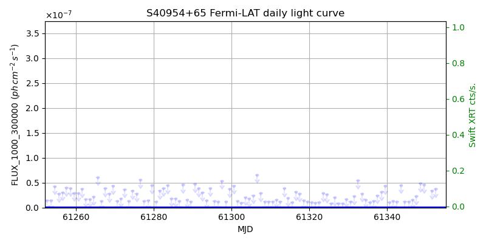
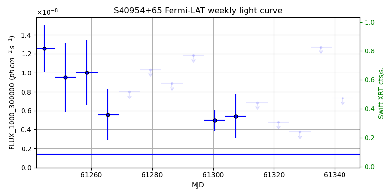

LAT Lightcurve site: https://fermi.gsfc.nasa.gov/ssc/data/access/lat/msl_lc/source/S4_0954p65
Swift site: https://www.swift.psu.edu/monitoring/source.php?source=0954+658
NED: Query
Time of last update of this page: UT: 2026-11-06 16:21 (MJD: 61350.682)
| Property | Value |
|---|---|
| R.A. | 9:58:47.28 |
| Dec. | 65:33:54.0 |
| z | 0.369 |
| 3FGL SpectrumType | PowerLaw |
| 3FGL PL Index | 2.38 |
| 3FGL Flux_100_300000 | 3.33e-08 1 / (s cm2) |
| 3FGL Flux_1000_300000 | 1.38e-09 1 / (s cm2) |
| 3FGL Flux >200 GeV | 9.14e-13 1 / (s cm2) |
| 3FGL Extrap. Crab >200 GeV | 0.00 |
| 3FGL Flux After EBL Absorption >200GeV | 2.40e-13 1 / (s cm2) |
| 3FGL EBL Crab Fraction >200GeV | 0.00 |

| MJD | dMJD | Flux | dFlux | Frac3FGL | FracCrab>200GeV | EBLFracCrab>200GeV |
|---|---|---|---|---|---|---|
| 61345.50 | 0.50 | 2.40e-07 | 0.00e+00 | 0.00 | 0.00 | 0.00 |
| 61346.50 | 0.50 | 4.48e-07 | 0.00e+00 | 0.00 | 0.00 | 0.00 |
| 61347.50 | 0.50 | 1.93e-07 | 0.00e+00 | 0.00 | 0.00 | 0.00 |
| 61348.50 | 0.50 | 1.01e-07 | 0.00e+00 | 0.00 | 0.00 | 0.00 |
| 61349.50 | 0.50 | 1.62e-07 | 0.00e+00 | 0.00 | 0.00 | 0.00 |

| MJD | dMJD | Flux | dFlux | Frac3FGL | FracCrab>200GeV | EBLFracCrab>200GeV |
|---|---|---|---|---|---|---|
| 61314.50 | 3.50 | 8.90e-08 | 0.00e+00 | 0.00 | 0.00 | 0.00 |
| 61321.50 | 3.50 | 8.06e-08 | 2.45e-08 | 2.42 | 0.01 | 0.00 |
| 61328.50 | 3.50 | 7.05e-08 | 0.00e+00 | 0.00 | 0.00 | 0.00 |
| 61335.50 | 3.50 | 5.74e-08 | 2.35e-08 | 1.73 | 0.01 | 0.00 |
| 61342.50 | 3.50 | 7.32e-08 | 0.00e+00 | 0.00 | 0.00 | 0.00 |

| MJD | dMJD | Flux | dFlux | Frac3FGL | FracCrab>200GeV | EBLFracCrab>200GeV |
|---|---|---|---|---|---|---|
| 61345.50 | 0.50 | 1.19e-08 | 0.00e+00 | 0.00 | 0.00 | 0.00 |
| 61346.50 | 0.50 | 1.56e-08 | 0.00e+00 | 0.00 | 0.00 | 0.00 |
| 61347.50 | 0.50 | 2.24e-08 | 0.00e+00 | 0.00 | 0.00 | 0.00 |
| 61348.50 | 0.50 | 4.79e-08 | 0.00e+00 | 0.00 | 0.00 | 0.00 |
| 61349.50 | 0.50 | 4.58e-08 | 0.00e+00 | 0.00 | 0.00 | 0.00 |

| MJD | dMJD | Flux | dFlux | Frac3FGL | FracCrab>200GeV | EBLFracCrab>200GeV |
|---|---|---|---|---|---|---|
| 61314.50 | 3.50 | 6.82e-09 | 0.00e+00 | 0.00 | 0.00 | 0.00 |
| 61321.50 | 3.50 | 4.80e-09 | 0.00e+00 | 0.00 | 0.00 | 0.00 |
| 61328.50 | 3.50 | 3.76e-09 | 0.00e+00 | 0.00 | 0.00 | 0.00 |
| 61335.50 | 3.50 | 1.27e-08 | 0.00e+00 | 0.00 | 0.00 | 0.00 |
| 61342.50 | 3.50 | 7.32e-09 | 0.00e+00 | 0.00 | 0.00 | 0.00 |
--------------------------------------------------------- Using user-supplied coords: 9:58:47.28 65:33:54.0 2000 --------------------------------------------------------- FLWO UT night of: 2026-11-07 Local Sid. @ Midnight: 02:42 Sunset (-15.0) (local, UT): 18:39 01:39 Sunrise (-15.0) (local, UT): 05:36 12:36 Moonrise (local, UT): 05:16 12:16 Moonset (local, UT): Moon phase: 0.04 --------------------------------------------------------- AzTime LSID UT Obj_el Obj_az Mn_el Mn_az Sep. --------------------------------------------------------- 18:39 21:20 01:39 7.5 355.8 -35.5 278.9 83.8 19:09 21:50 02:09 7.2 358.9 -41.6 283.5 84.0 19:39 22:20 02:39 7.3 2.1 -47.5 288.8 84.2 20:09 22:50 03:09 7.7 5.2 -53.3 295.3 84.4 20:39 23:20 03:39 8.4 8.2 -58.7 303.4 84.6 21:09 23:50 04:09 9.5 11.2 -63.5 313.9 84.8 21:39 00:20 04:39 10.9 14.0 -67.5 328.0 85.0 22:09 00:50 05:09 12.6 16.7 -70.0 346.2 85.2 22:39 01:20 05:39 14.6 19.2 -70.5 6.9 85.4 23:09 01:51 06:09 16.8 21.5 -68.8 26.6 85.6 23:39 02:21 06:39 19.2 23.5 -65.4 42.5 85.8 00:09 02:51 07:09 21.9 25.3 -60.9 54.4 86.0 00:39 03:21 07:39 24.7 26.8 -55.8 63.5 86.3 01:09 03:51 08:09 27.6 27.9 -50.2 70.6 86.5 01:39 04:21 08:39 30.6 28.8 -44.4 76.4 86.7 02:09 04:51 09:09 33.7 29.2 -38.4 81.4 86.9 02:39 05:21 09:39 36.9 29.2 -32.4 85.8 87.1 03:09 05:51 10:09 40.0 28.7 -26.3 89.9 87.3 03:39 06:21 10:39 43.0 27.7 -20.2 93.7 87.6 04:09 06:51 11:09 45.9 26.0 -14.2 97.5 87.8 04:39 07:21 11:39 48.6 23.7 -8.1 101.2 88.0 05:09 07:52 12:09 51.0 20.6 -1.2 105.0 88.2 05:36 08:19 12:36 52.9 17.2 3.4 108.6 88.4 --------------------------------------------------------- Dark hours >55 deg.: 0.00